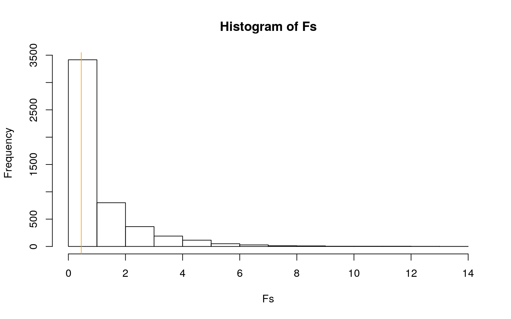
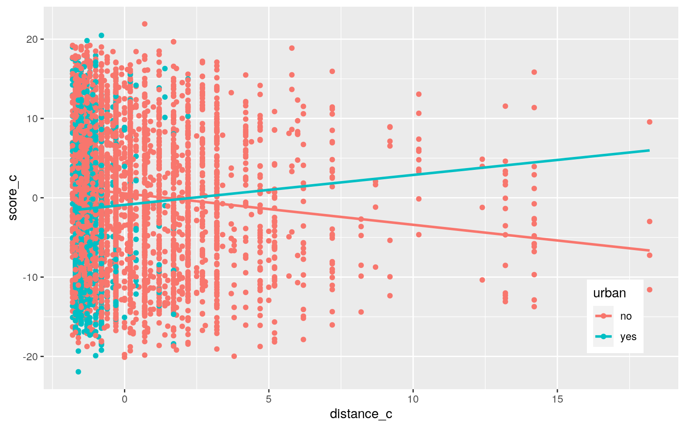
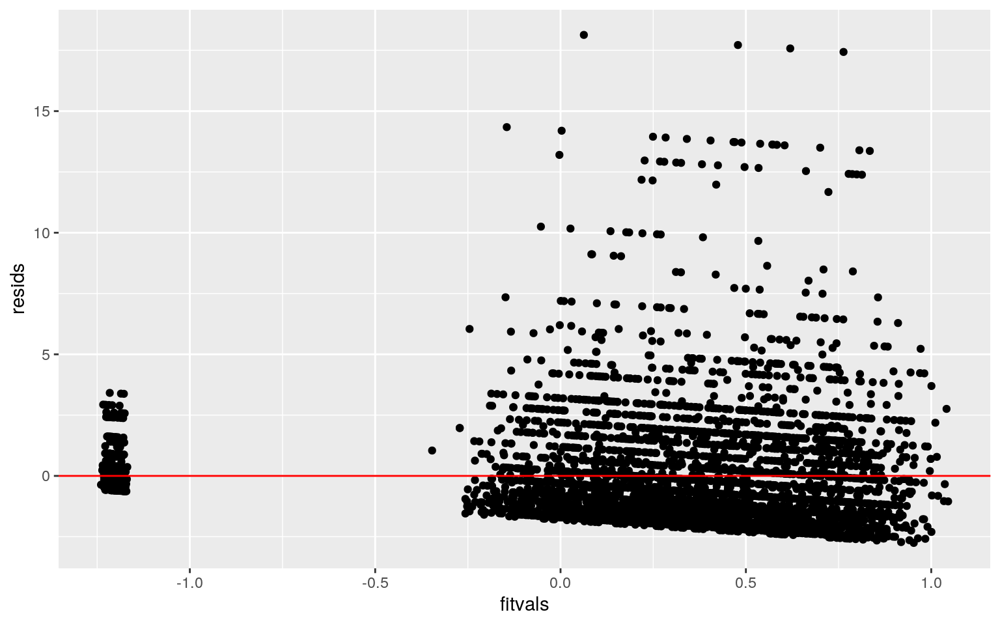
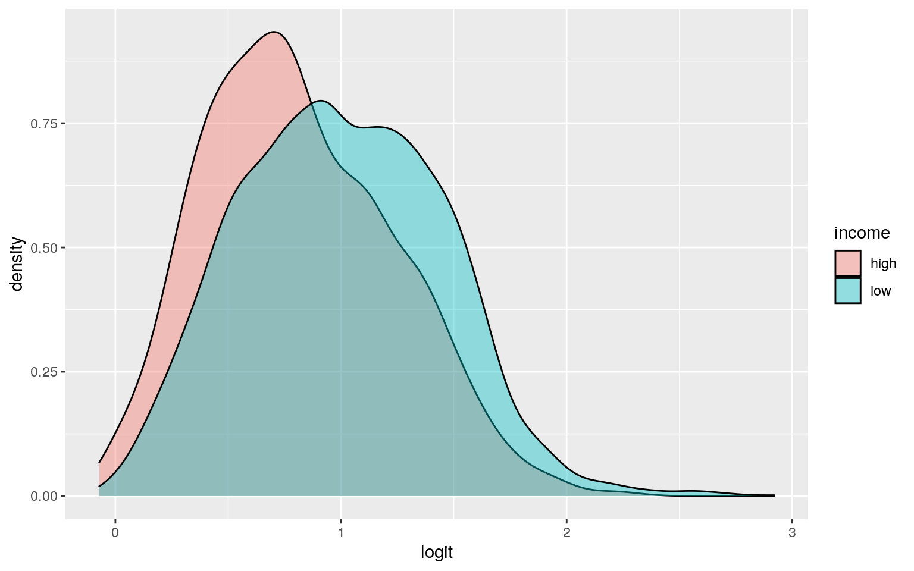
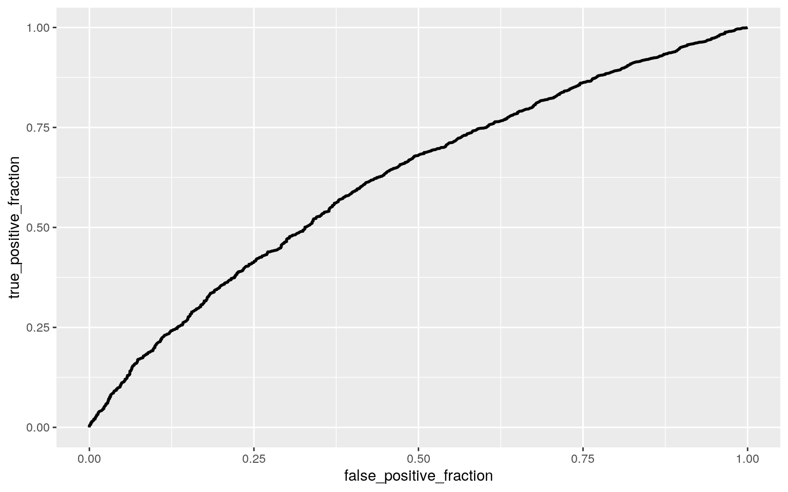

Lindsey Doyle LND642 - 0. Introduction
The dataset that is used for this project aims to look at how different explanatory variables influence the distance of the college a student chooses to attend from their hometown.The survey is collected on students in 1980 from approximately 1,100 high schools and was conducted by the U.S. Department of Education.There are 4739 observations of 15 variables in the dataset. The variables is 4-year college distance from home,gender, ethnicity, composite test score, level of education of both parents (mcollege and fcollege), whether or not the family owns a home (home) and where the home is located (urban), the unemployment rate and state hourly wage for the county, the average state 4 year tuition, the individual’s number of years in education, family income, and region. Citation: Kleiber, Christian. “College Distance Data.” Rdrr.io, 6 Feb. 2020, rdrr.io/cran/AER/man/CollegeDistance.html. Accessed 28 Apr. 2021.
CollegeDistance <- read.csv("~/CollegeDistance (1).csv") group<-CollegeDistance$income
DV <- CollegeDistance %>% select(score, education, unemp)
sapply(split(DV,group), mshapiro_test)## high low
## statistic 0.9292558 0.9273997
## p.value 6.966493e-25 1.19527e-37box_m(DV,group)## # A tibble: 1 x 4
## statistic p.value parameter method
## <dbl> <dbl> <dbl> <chr>
## 1 16.1 0.0131 6 Box's M-test for Homogeneity of
Covariance Matricesman1<-manova(cbind(score, education, unemp)~income, data=CollegeDistance)
summary(man1)## Df Pillai approx F num Df den Df Pr(>F)
## income 1 0.060832 102.23 3 4735 < 2.2e-16 ***
## Residuals 4737
## ---
## Signif. codes: 0 '***' 0.001 '**' 0.01 '*' 0.05 '.' 0.1
' ' 1summary.aov(man1)## Response score :
## Df Sum Sq Mean Sq F value Pr(>F)
## income 1 11415 11414.6 155.66 < 2.2e-16 ***
## Residuals 4737 347362 73.3
## ---
## Signif. codes: 0 '***' 0.001 '**' 0.01 '*' 0.05 '.' 0.1
' ' 1
##
## Response education :
## Df Sum Sq Mean Sq F value Pr(>F)
## income 1 728.5 728.47 239.02 < 2.2e-16 ***
## Residuals 4737 14437.4 3.05
## ---
## Signif. codes: 0 '***' 0.001 '**' 0.01 '*' 0.05 '.' 0.1
' ' 1
##
## Response unemp :
## Df Sum Sq Mean Sq F value Pr(>F)
## income 1 221 220.866 29.091 7.243e-08 ***
## Residuals 4737 35965 7.592
## ---
## Signif. codes: 0 '***' 0.001 '**' 0.01 '*' 0.05 '.' 0.1
' ' 1CollegeDistance%>%group_by(income)%>%summarize(mean(score),mean(education), mean(unemp))## # A tibble: 2 x 4
## income `mean(score)` `mean(education)` `mean(unemp)`
## <fct> <dbl> <dbl> <dbl>
## 1 high 53.3 14.4 7.26
## 2 low 49.9 13.6 7.73pairwise.t.test(CollegeDistance$score,CollegeDistance$education,CollegeDistance$unemp, p.adj="none")##
## Pairwise comparisons using t tests with pooled SD
##
## data: CollegeDistance$score and
CollegeDistance$education
##
## 12 13 14 15 16 17
## 13 1.7e-15 - - - - -
## 14 < 2e-16 0.00100 - - - -
## 15 < 2e-16 < 2e-16 1.0e-08 - - -
## 16 < 2e-16 < 2e-16 < 2e-16 9.1e-10 - -
## 17 < 2e-16 < 2e-16 < 2e-16 7.9e-15 0.00027 -
## 18 < 2e-16 8.4e-08 9.1e-05 0.15844 0.32504 0.00739
##
## P value adjustment method: none1-.95^6## [1] 0.2649081.05/6## [1] 0.008333333A MANOVA, an ANOVA, and 4 post-hoc tests were can for a total of 6. The probability of at least one type I error is 26.49% and the bonferroni correction is 0.008, meaning that it is still significant. All MANOVA assumptions were met because each group has over 25 subjects. There is a significant difference between low income and high income households for unemployement rate, assessment score, and education level.
set.seed(1234)
summary(aov(education~gender, data=CollegeDistance))## Df Sum Sq Mean Sq F value Pr(>F)
## gender 1 1 1.446 0.452 0.502
## Residuals 4737 15164 3.201OBS_F <-0.452
Fs <- replicate(5000,{
new <- CollegeDistance%>%mutate(education=sample(education))
SSW <- new%>%group_by(gender)%>%summarize(SSW=sum((education-mean(education))^2))%>%summarize(sum(SSW))%>%pull
SSB <- new%>%mutate(mean=mean(education))%>%group_by(gender)%>%mutate(groupmean=mean(education))%>%summarize(SSB=sum((mean-groupmean)^2))%>%summarize(sum(SSB))%>%pull
(SSB/1)/(SSW/4737)
})
hist(Fs, probs=T); abline(v= OBS_F, col="orange", add=T)
mean(Fs>OBS_F)## [1] 0.5004The null hypothesis is that there is no difference between education levels between genders. The alternative hypothesis is that there is a difference between education levels between genders. The p-value is 0.5004, which means I accept the null hypothesis.
CollegeDistance$distance_c <- CollegeDistance$distance - mean(CollegeDistance$distance)
CollegeDistance$score_c <- CollegeDistance$score - mean(CollegeDistance$score)
fit <- lm(distance_c~score_c*urban, data=CollegeDistance)
summary(fit)##
## Call:
## lm(formula = distance_c ~ score_c * urban, data =
CollegeDistance)
##
## Residuals:
## Min 1Q Median 3Q Max
## -2.7557 -1.3939 -0.3957 0.4136 18.1342
##
## Coefficients:
## Estimate Std. Error t value Pr(>|t|)
## (Intercept) 0.379565 0.036289 10.459 < 2e-16 ***
## score_c -0.033119 0.004212 -7.863 4.62e-15 ***
## urbanyes -1.582541 0.075778 -20.884 < 2e-16 ***
## score_c:urbanyes 0.034792 0.008524 4.082 4.54e-05 ***
## ---
## Signif. codes: 0 '***' 0.001 '**' 0.01 '*' 0.05 '.' 0.1
' ' 1
##
## Residual standard error: 2.185 on 4735 degrees of
freedom
## Multiple R-squared: 0.09544, Adjusted R-squared: 0.09487
## F-statistic: 166.5 on 3 and 4735 DF, p-value: < 2.2e-16The linear regression was run after centering the assessment scores and distance from 4 year college.The odds of the distance of a 4-year college from a student’s home decreases by 0.033 per point on the assessment, decreases by 1.583 if the student is from an urban area, and increases by 0.034 if the student is from an urban area and took the assessment test.
ggplot(CollegeDistance, aes(x=distance_c, y=score_c))+geom_point(aes(color=urban))+ geom_smooth(method="lm",se=F,fullrange=T,aes(color=urban))+theme(legend.position=c(.9,.19))
resids<-fit$residuals
fitvals<-fit$fitted.values
ggplot()+geom_point(aes(fitvals,resids))+geom_hline(yintercept=0, color='red')
ks.test(resids, "pnorm", mean=0, sd(resids)) ##
## One-sample Kolmogorov-Smirnov test
##
## data: resids
## D = 0.17871, p-value < 2.2e-16
## alternative hypothesis: two-sided(sum((CollegeDistance$distance_c-mean(CollegeDistance$distance_c))^2)-sum(fit$residuals^2))/sum((CollegeDistance$distance_c)^2)## [1] 0.09544241bptest(fit)##
## studentized Breusch-Pagan test
##
## data: fit
## BP = 85.648, df = 3, p-value < 2.2e-16coeftest(fit, vcov = vcovHC(fit))[,1:2]## Estimate Std. Error
## (Intercept) 0.37956467 0.041373352
## score_c -0.03311929 0.004601847
## urbanyes -1.58254141 0.045200956
## score_c:urbanyes 0.03479174 0.005117715summary(fit)$coef[,1:2]## Estimate Std. Error
## (Intercept) 0.37956467 0.036289148
## score_c -0.03311929 0.004212184
## urbanyes -1.58254141 0.075778492
## score_c:urbanyes 0.03479174 0.008523686The model explains 9.54% of the variation in the outcome. The model also does not pass the all of the assumptions. The model does not have a normal distribution, it is not homoskedastic, and the relationship is not linear. There is also no significant standard errors for either the original or robust versions. The original and robust errors are relatively unchanged from one another
set.seed(1234)
samp_distn<-replicate(5000, {
boot <- sample_frac(CollegeDistance, replace=TRUE)
fit <-lm(distance_c~score_c*urban, data= boot)
coef(fit) #save coefs
})
samp_distn %>% t %>% as.data.frame %>% summarize_all(sd)## (Intercept) score_c urbanyes score_c:urbanyes
## 1 0.04211341 0.004580159 0.04566567 0.00505419coeftest(fit, vcov = vcovHC(fit))[,1:2]## Estimate Std. Error
## (Intercept) 0.37956467 0.041373352
## score_c -0.03311929 0.004601847
## urbanyes -1.58254141 0.045200956
## score_c:urbanyes 0.03479174 0.005117715summary(fit)$coef[,1:2]## Estimate Std. Error
## (Intercept) 0.37956467 0.036289148
## score_c -0.03311929 0.004212184
## urbanyes -1.58254141 0.075778492
## score_c:urbanyes 0.03479174 0.008523686samp_distn %>% t %>% as.data.frame %>% pivot_longer(1:3) %>% group_by(name) %>% summarize(lower=quantile(value,.025), upper=quantile(value,.975))## # A tibble: 3 x 3
## name lower upper
## <chr> <dbl> <dbl>
## 1 (Intercept) 0.299 0.462
## 2 score_c -0.0421 -0.0241
## 3 urbanyes -1.67 -1.49The bootstrapped standard errors did not significantly change compared to the originial. None were significant. - 5. Logistic Regression Model
#Predicting income from distance of college from home and score
fit <- glm(income~distance+score, data=CollegeDistance, family = "binomial")
prob <- predict(fit, type = "response")
class_diag(prob,CollegeDistance$income)## acc sens spec ppv auc
## low 0.7132306 0.9988145 0.007326007 0.7132275 0.6220797truth <- CollegeDistance$income
table(prediction = as.numeric(prob > 0.5), truth)## truth
## prediction high low
## 0 10 4
## 1 1355 3370summary(fit)##
## Call:
## glm(formula = income ~ distance + score, family =
"binomial",
## data = CollegeDistance)
##
## Deviance Residuals:
## Min 1Q Median 3Q Max
## -2.1863 -1.3276 0.7064 0.8621 1.2040
##
## Coefficients:
## Estimate Std. Error z value Pr(>|z|)
## (Intercept) 3.121833 0.207771 15.025 < 2e-16 ***
## distance 0.079470 0.016614 4.783 1.72e-06 ***
## score -0.045553 0.003865 -11.786 < 2e-16 ***
## ---
## Signif. codes: 0 '***' 0.001 '**' 0.01 '*' 0.05 '.' 0.1
' ' 1
##
## (Dispersion parameter for binomial family taken to be 1)
##
## Null deviance: 5690.4 on 4738 degrees of freedom
## Residual deviance: 5511.9 on 4736 degrees of freedom
## AIC: 5517.9
##
## Number of Fisher Scoring iterations: 4CollegeDistance$logit <-predict(fit)
ggplot(CollegeDistance,aes(logit, fill=income))+geom_density(alpha=.4)
library(plotROC)
ROCplot <- ggplot(CollegeDistance) + geom_roc(aes(d=income, m=prob), n.cuts=0)
ROCplot
calc_auc(ROCplot)## PANEL group AUC
## 1 1 -1 0.6220663The log of odds of having low income goes up by 0.079 per 10 miles from a 4-year college and decreases by 0.045 per point on the achievement test. The accuracy of the data is 0.713, sensitivity is 0.999, specificity is 0.007, precision is 0.713, and auc is 0.622. The AUC indicates that the model is poor.
fit <- glm(income~., data=CollegeDistance, family = "binomial")
prob <- predict(fit, type = "response")
class_diag(prob, CollegeDistance$income)## acc sens spec ppv auc
## low 0.7651403 0.9208654 0.3802198 0.7859853 0.7504172truth <- CollegeDistance$income
table(prediction = as.numeric(prob > 0.5), truth)## truth
## prediction high low
## 0 519 267
## 1 846 3107set.seed(1234)
k=10
data<-CollegeDistance[sample(nrow(CollegeDistance)),] #randomly order
rowsfolds<-cut(seq(1:nrow(CollegeDistance)),breaks=k,labels=F) #create folds
diags<-NULL
for(i in 1:k){
train<-data[rowsfolds!=i,]
test<-data[rowsfolds==i,]
truth<-test$income
fit1<-glm(income~.,data=train,family="binomial")
probs1<-predict(fit1,newdata = test,type="response")
diags<-rbind(diags,class_diag(probs1,truth))
}
summarize_all(diags,mean)## acc sens spec ppv auc
## 1 0.7645048 0.9205399 0.3795037 0.7856159 0.7457492The accuracy is 0.765, sensitivity is 0.921, specificity is 0.380, precision is 0.786, and auc is 0.746.The classification diagnostic variables were all relatively the same as the previous models. The AUC indicates that the model is a fair fit for the data.
library(glmnet)
set.seed(1234)
y<-as.matrix(CollegeDistance$income) #grab response
x<-model.matrix(income~.,data=CollegeDistance)[,-1] #grab predictors
cv<-cv.glmnet(x,y,family="binomial")
lasso<-glmnet(x,y,family="binomial",lambda=cv$lambda.1se)
coef(lasso)## 19 x 1 sparse Matrix of class "dgCMatrix"
## s0
## (Intercept) 3.754327e+00
## X .
## gendermale -6.545304e-02
## ethnicityhispanic 5.452584e-03
## ethnicityother -4.288223e-01
## score .
## fcollegeyes -1.201607e+00
## mcollegeyes -4.600653e-01
## homeyes -4.804713e-01
## urbanyes 5.791730e-02
## unemp 1.447289e-02
## wage -3.162527e-02
## distance 1.437065e-02
## tuition .
## education -1.163532e-01
## regionwest .
## distance_c 1.805785e-05
## score_c .
## logit 2.810141e-02probs2<-predict(lasso,x,type="response")
class_diag(probs2, CollegeDistance$income)## acc sens spec ppv auc
## low 0.7634522 0.9253112 0.36337 0.7822601 0.7451598table(prediction = as.numeric(probs2 > 0.5), CollegeDistance$income)##
## prediction high low
## 0 496 252
## 1 869 3122The retained variables after LASSO were gender, ethnicity, fcollege, mcollege, home, urban, unemployment, wage, distance, and education.
set.seed(1234)
k=10
data<-CollegeDistance[sample(nrow(CollegeDistance)),] #randomly order
rowsfolds<-cut(seq(1:nrow(CollegeDistance)),breaks=k,labels=F) #create folds
diags<-NULL
for(i in 1:k){
train<-data[rowsfolds!=i,]
test<-data[rowsfolds==i,]
truth<-test$income
fit1<-glm(income~gender+ethnicity+fcollege+mcollege+home+urban+unemp+wage+distance+education,data=train,family="binomial")
probs1<-predict(fit1,newdata = test,type="response")
diags<-rbind(diags,class_diag(probs1,truth))
}
summarize_all(diags,mean)## acc sens spec ppv auc
## 1 0.7636609 0.9208232 0.3757719 0.7846296 0.7461891The accuracy is 0.764, sensitivity is 0.921, specificity is 0.376, precision is 0.785, and auc is 0.746.The classification diagnostic variables were all relatively the same as the previous models. The AUC indicates that the model is a fair fit for the data.
…